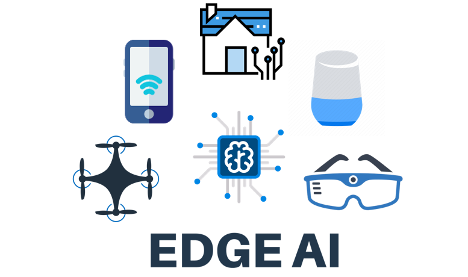
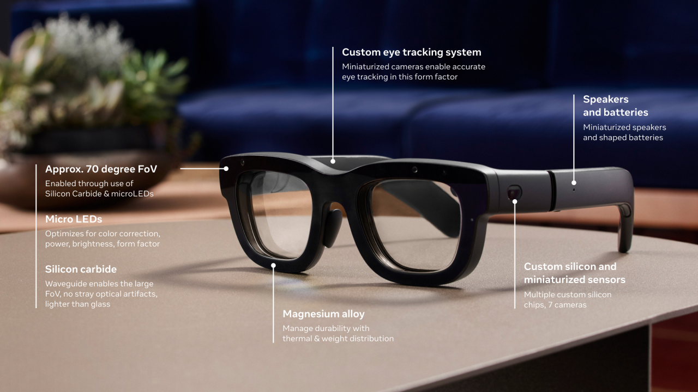
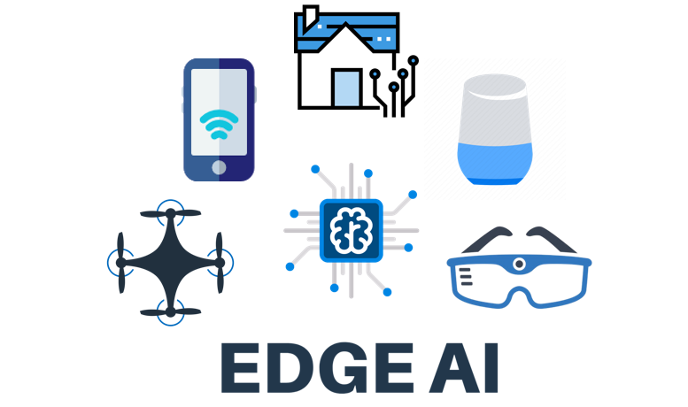
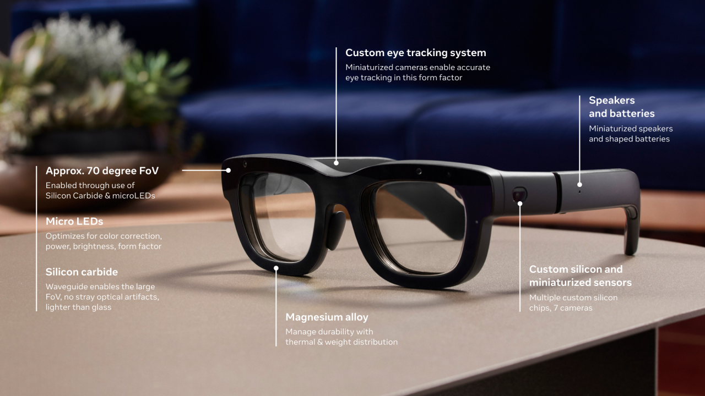

I am an Associate Professor in the Department of Computer Science and Engineering at The Ohio State University and the Director of OSU AIoT and Machine Learning Systems Lab. I received my Ph.D. from University of Southern California and B.S. from Peking University, and spent one year as a Postdoctoral Associate at Cornell University.
The key mission of my lab is to
My work has been recognized by five best paper awards and three best paper nominations/honorable mentions, NSF CRII Award, Facebook/Meta Faculty Research Award, Amazon Research Award, and MSU Innovation of the Year Award. I am the 4th Place Winner of Google MicroNet Challenge, the Third Place Winner of NSF Hearables Challenge, and the champion of NIH Pill Image Recognition Challenge. I am also the recipient of the inaugural USC ECE SIPI Distinguished Alumni Award in the Junior/Academia category for my contributions to mobile computing, edge AI, and AIoT in my early career.
The key mission of my lab is to
Empower Billions of Everyday Devices with AI
to realize the vision of Artificial Intelligence of Things (AIoT). To achieve this mission, we focus on its core challenges related to sensing, intelligence, connectivity, efficiency as well as its real-world applications. Achieving such goal requires a combination of approaches. My work draws insights from a broad set of disciplines including mobile/edge computing, AI/machine learning, distributed systems, computer networks, and human-centered computing.
My work has been recognized by five best paper awards and three best paper nominations/honorable mentions, NSF CRII Award, Facebook/Meta Faculty Research Award, Amazon Research Award, and MSU Innovation of the Year Award. I am the 4th Place Winner of Google MicroNet Challenge, the Third Place Winner of NSF Hearables Challenge, and the champion of NIH Pill Image Recognition Challenge. I am also the recipient of the inaugural USC ECE SIPI Distinguished Alumni Award in the Junior/Academia category for my contributions to mobile computing, edge AI, and AIoT in my early career.
Recent News
-
08/2025:Our vision paper won the 2024 Best Paper Award of IEEE Internet Computing Magazine.
-
05/2025:MEIT, our work on multimodal LLM-based ECG report generation is accepted to ACL.
-
04/2025:Our survey on efficient diffusion models is accepted to Transactions on Machine Learning Research (TMLR).
-
02/2025:D2O and MEDA, our series work on Large Language Model and Multimodal Large Language Model KV cache compression for efficient long-context inference are accepted to ICLR'25 and NAACL'25.
-
02/2025:SVD-LLM and SVD-LLM V2, our series work on post-training Large Language Model compression are accepted to ICLR'25 and NAACL'25.
-
01/2025:Thanks Meta Reality Labs for the generous faculty award for supporting our research.
-
12/2024:Thanks NVIDIA for the generous NVIDIA academic grant for supporting our research.
-
09/2024:Very honored to receive the 2024 University of Chicago Outstanding Educator Award.
-
09/2024:Famba-V, our work on efficient Vision Mamba won the Best Paper Award of ECCV'24 Workshop on Computational Aspects of Deep Learning sponsored by NVIDIA.
-
08/2024:In collaboration with MSU, USC, and UCLA, our survey on Artificial Intelligence of Things (AIoT) is accepted to ACM Transactions on Sensor Networks. We also create a GitHub repository where we organize the papers featured in this survey. We hope this survey along with the GitHub repository could serve as valuable resources to help researchers and practitioners gain a comprehensive understanding of AIoT research and inspire them to contribute to this important and exciting field.
-
08/2024:Recent advancements in Generative AI have enabled a new wave of AI revolution. The implications of such advancements for Internet of Things (IoT) are profound. In our vision paper accepted to IEEE Internet Computing Magazine, we share our views on the applications, challenges, and opportunities of IoT in the era of Generative AI.
Research
 



Currently, my students and I are working on the following topics:
- Efficient Generative AI(multimodal large language models, diffusion models, mixture of experts (MoE), state space models (SSM)).
- Edge AIfor mobile, AR, wearables, robots, as well as networked cloud-edge systems.
- Systems for Generative AI and AI Agents.
- Spatial Computing and Physical AI.
- Foundation Models for IoT.
- Human-Centered Computing and Mobile Health.
Selected Awards
- 2025: Meta Reality Labs Faculty Research Award
- 2024: University of Chicago Outstanding Educator Award
- 2024: Best Paper Award, IEEE Internet Computing Magazine
- 2024: Best Paper Award, ECCV'24 Workshop on Computational Aspects of Deep Learning
- 2023: Inaugural USC ECE SIPI Distinguished Alumni Award in Junior/Academia Category
- 2022: Meta Reality Labs Faculty Research Award
- 2022: ACM SIGMOBILE Research Highlight
- 2021: Best Paper Award, ACM SenSys'21
- 2020: Facebook Faculty Research Award
- 2020: Best Paper Award, NeurIPS'20 Federated Learning Workshop
- 2020: Best Paper Award Nominee, ACM/IEEE SEC'20
- 2020: MSU Innovation of the Year Award
- 2019: Amazon AWS Machine Learning Research Award
- 2019: Google MicroNet Challenge (CIFAR-100 Track) 4th Place Winner @ NeurIPS'19
- 2019: Best Paper Award Candidate, ICCV'19 Neural Architects Workshop
- 2018: Best Paper Award, IEEE CNS'18
- 2017: NSF Hearables Challenge Third Place Winner
- 2017: NIH Mobile Health (mHealth) Scholar
- 2016: NSF CRII Award
- 2016: NIH Pill Image Recognition Challenge First Place Winner
- 2015: Best Paper Award Honorable Mention, ACM UbiComp'15
- 2015: All-Time Top Article, JMIR
- 2014: ACM SIGMOBILE Research Highlight
Recent Talks
Empowering the Next Billion Devices with Deep Learning
Stanford MLSys Seminar Series
Efficient Neural Architecture Search at Scale
Workshop on Energy Efficient Machine Learning and Cognitive Computing
2020 MSU Innovation of the Year
Michigan State University